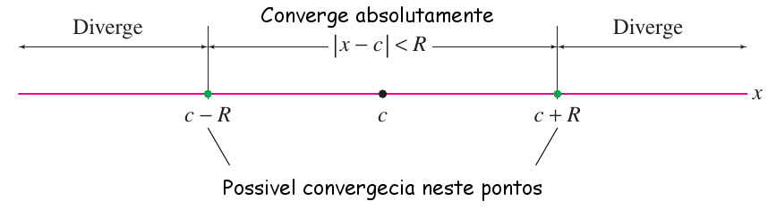
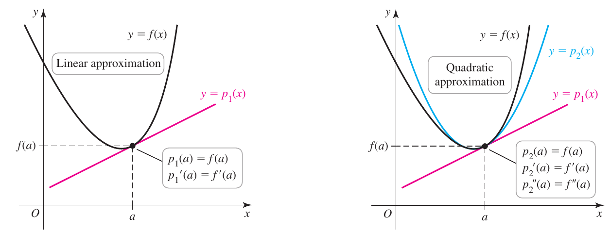

Chamamos de séries de potencias centrada em $c$, aquelas séries escrita na forma \[ F\left( x\right) = \displaystyle \sum _{n=0}^{\infty }a_{n}\left( x-c\right) ^{n} = a_{0}+a_{1}\left( x-c\right) + a_{2}\left( x-c\right) ^{2}+ a_{3}\left( x-c\right) ^{3}+\ldots \] Observe que diferentemente das séries já estudadas (tipo a geométrica), os termos dá série não são constante, mas sim uma variável.
A convergência deste tipo de série pode ser descrita de forma bastante simples, diremos que $F(x)$ converge absolutamente quando $\left| x-c\right| < R$ e diremos que diverge quando $\left| x-c\right| > R$, dessa forma vemos que para este tipo de séries há um intervalo de convergência

Figura 01: Intervalo de convergência para uma série de potencias.
| Teorema |
|
Toda série de potencias \[ \displaystyle \sum _{n=0}^{\infty }a_{n}\left( x-c\right) ^{n} \] tem raio de convergência $R$, o qual é o um número não negativo $(R > 0)$ ou infinito $(R=\infty)$. Se $R$ é finito, $F(x)$ converge absolutamente quando $|x-c| < R$ e diverge quando $|x-c| > R$. Se $R=\infty$, então $F(x)$ converge absolutamente para todo $x$. |
Uma forma prática de determinar o raio de convergência de uma série de potencia é utilizando o teste da razão:
| Teorema |
|
Considere a série de potência $\displaystyle \sum_{n=0}^\infty C_n \left( x-a\right)^n$, para determinar o raio de convergência utilizamos o critério da razão onde se chamamos de $a_n = C_n \left( x-a\right)^n$, teremos
|
Uma série de potencia com a qual já trabalhamos é a série geométrica, basta pensar no $x$ como representando um conjunto de valores e não um único número, ou seja
| A série geométrica como uma série de potencias |
|
\[ \dfrac{1}{1-x}=\sum_{n=0}^{\infty}\left(x\right)^{n},\qquad |x| < 1 \] |
Podemos entender as séries de potencia como sendo um polinômio, de fato, podemos integrar e derivar termo a termo e dessa forma obter a derivada e a integral da série
| Teorema |
|
Assumindo que \[ F\left( x\right) = \displaystyle \sum _{n=0}^{\infty }a_{n}\left( x-c\right) ^{n} \] tem raio de convergência $R>0$. Então $F(x)$ é diferenciável em $(c-R,c+R)$ (ou para todo $x$ se $R=\infty$). Além disso, podemos integrar e diferenciar termo por termo. Para $x\in(c-R,c+R)$, \[ F'\left( x\right) = \displaystyle \sum _{n=0}^{\infty }n\,a_{n}\left( x-c\right) ^{n-1} \] \[ \displaystyle \int \left( x\right) \,dx= A + \displaystyle \sum _{n=0}^{\infty }\dfrac{a_{n}}{n+1}\left( x-c\right) ^{n+1} \] Estas séries tem o mesmo raio de convergência $R$ |
Por definição, a derivada de uma função em um ponto $y=f(a)$ é dada por \[ f'(a) = \lim_{x\to a}\dfrac{y-f(a)}{x-a} \] a partir dessa definição é introduzida a ideia de aproximação linear no ponto $a$, onde \[ y = f(a) + f'(a)\left( x-a \right) \] como a aproximação linear é um polinômio de grau $1$, podemos escrever \[ p_1(x) = f(a) + f'(a)\left( x-a \right) \] esse polinômio tem a propriedade de seu valor coincide com o da função $f$ no ponto $a$, além da sua inclinação, ou seja \[ p_1(a) = f(a)\quad\text{e}\quad p'_1(a) = f'(a) \]

Figura 08: À esquerda a aproximação linear de uma função e à direita a aproximação quadrática.
Agora suponha que você deseje um polinômio que tenha ainda mais caraterísticas da função original, suponhamos que além das anteriores a concavidade da função seja considerada no ponto. Para isso proporemos um polinômio de grau $2$ centrado em $a$ \[ p_2(x) = f(a) + f'(a)\left( x-a \right) + c_2\left( x-a \right)^2 \] que deve verificar tudo o já verificado e além disso a segunda derivada tenham o mesmo valor da função original (e dessa forma a concavidade), isto é \[ p_2(a) = f(a),\quad p_2'(a) = f'(a)\quad\text{e}\quad p_2''(a) = f''(a) \] substituindo $x=a$ em $p_2(x)$ \begin{align*} p_2(a) &= f(a) + f'(a)\left( a-a \right) + c_2\left( a-a \right)^2\\ p_2(a) &= f(a) \end{align*} verificando a primeira condição, derivando e substituindo $x=a$ \begin{align*} p_2'(x) &= f'(a) + 2c_2\left( x-a \right)\\ p_2'(a) &= f'(a) + 2c_2\left( a-a \right)\\ p_2'(a) &= f'(a) \end{align*} derivando novamente e substituindo \begin{align*} p_2''(x) &= 2c_2\\ c_2 &= \dfrac{p_2''(a)}{2}\\ &= \dfrac{f''(a)}{2} \end{align*} uma vez que exigimos $p_2''(a) = f''(a)$, sendo assim podemos escrever nosso polinômio \[ p_2(x) = f(a) + f'(a)\left( x-a \right) + \dfrac{f''(a)}{2}\left( x-a \right)^2 \] podemos continuar com nossa aproximação indo até a terceira ordem \[ p_3(x) = f(a) + f'(a)\left( x-a \right) + \dfrac{f''(a)}{2}\left( x-a \right)^2 + c_3\left( x-a \right)^3 \] e exigindo \[ p_3(x) = f(a),\quad p_3'(a) = f'(a),\quad p_3''(a) = f''(a)\quad\text{e}\quad p_3'''(a) = f'''(a) \] é fácil calcular que reobteremos o mesmo resultado que para o caso de $p_2(x)$, mas que na terceira derivada \begin{align*} p_3(x) &= f(a) + f'(a)\left( x-a \right) + \dfrac{f''(a)}{2}\left( x-a \right)^2 + c_3\left( x-a \right)^3\\ p_3'(x) &= f'(a)\left( x-a \right) + f''(a)\left( x-a \right) + 3c_3\left( x-a \right)^2\\ p_3''(x) &= f''(a) + \left(3\cdot 2\right) c_3\left( x-a \right)\\ p_3'''(x) &= \left(3\cdot 2\right) c_3\\ p_3'''(a) &= \left(3\cdot 2\right) c_3\\ c_3 &= \dfrac{f'''(a)}{3\cdot 2}\\ c_3 &= \dfrac{f'''(a)}{3!} \end{align*} ou seja \[ p_3(x) = f(a) + f'(a)\left( x-a \right) + \dfrac{f''(a)}{2}\left( x-a \right)^2 + \dfrac{f'''(a)}{3!}\left( x-a \right)^3 \] Estes resultados são generalizados na seguinte definição
| Definição: Polinômios de Taylor |
|
Seja $f$ uma função com $f',\, f'',\, \ldots , \, f^{(n)}$ definidas em $a$. O \textbf{polinômio de Taylor de ordem n} para $f$ centrada em $a$, denotado por $p_n$ tem a propriedade de coincidir com o valor e todas as $n$ derivadas da função $f$ no ponto $a$, isto é \[ p_n(x) = f(a),\quad p_n'(a) = f'(a),\quad \cdots, \quad\text{e},\quad p_n^{n}(a) = f^{n}(a) \] e é definido como \[ p_n(x) = f(a) + f'(a)\left( x-a \right) + \dfrac{f''(a)}{2}\left( x-a \right)^2 + \cdots + \dfrac{f^{(n)}(a)}{n!}\left( x-a \right)^n \] ou de forma mais compacta como \[ p_n(x) = \sum_{k=0}^n c_k\,\left(x - a\right)^k \] com \textbf{coeficientes} \[ c_k = \dfrac{f^{k}(a)}{k!},\quad \text{para } k = 0,\, 1, \, 2,\, \ldots , \, n \] |
Similarmente ao feito no casos anteriores, o resto é definido como \[ R_n(x) = f(x) - p_n(x) \] O valor absoluto do resto corresponde ao erro cometido ao aproximar a função pelo polinômio de ordem $n$. Equivalentemente, podemos afirma que $f$ consiste de duas componente: a aproximação polinomial e o resto associado.
O seguinte teorema nos permite calcular o resto de um polinômio de Taylor
| Definição: Resto do teorema do Taylor |
|
Seja $f$ uma função contínua com derivadas até a $f^{(n+1)}$ num intervalo, $I$, aberto contendo $a$. Para todo $x$ em $I$ \[ f(x) = p_n(x)+R_n(x) \] onde $p_n$ é o polinômio de $n-essima$ ordem para $f$ centrada em $a$ e o resto é dado por \[ R_n(x) = \dfrac{f^{n+1}(c)}{(n+1)!}(x-a)^{n+1} \] para um ponto $c$ entre $x$ e $a$. |
Este tipo de resto é conhecido como \textbf{resto de Lagrange}, mas há outra expressão que pode ser utilizado para expressar o resto, o \textbf{resto por integral} \[ R_n(x) = \dfrac{1}{n!}\int_a^x \left( x-t \right)^nf^{n+1}(t)\,dt \] Voltando a nossa definição baseada no resto de Lagrange, observe que o termo que define o resto é muito similar ao primeiro termo desprezado na série de Taylor, excepto pelo fato de que $\displaystyle f^{(n+1)}$ é avaliado em algum ponto desconhecido $c$ entre $x$ e $a$. Dessa forma, como $c$ é desconhecido, a dificuldade em estimar o resto é encontrar um limite para $\displaystyle \left| f^{(n+1)}(c) \right|$. Assumindo que possamos determinar esse ponto, o seguinte teorema nos permite estimar o resto
| Teorema: Estimando o Resto |
|
Seja $n$ um número positivo fixo. Suponha que existe um número $M$ tal que $\displaystyle \left| f^{(n+1)}(c) \right| \leq M$, para todo $c$ entre $a$ e $x$, inclusive. O resto no $n$-éssimo termo do polinômio de ordem $n$ para $f$ centrado em $a$ satisfaz \[ R_n(x) =\left| f(x) - p_n(x) \right| =\left| f^{n+1}(c)\dfrac{(x-a)^{n+1}}{(n+1)!} \right| \leq M \dfrac{\left| x-a \right|^{n+1} }{(n+1)!} \] |
Existem dois tipos de erros que ocorrem ao calcular com séries. O primeiro, chamado erro de truncamento, é o erro que resulta quando uma série é aproximada por uma soma parcial; e o segundo, chamado erro de arredondamento, é o erro que surge de aproximações em cálculos numéricos.
Métodos para estimar e controlar o erro de arredondamento são estudados em um ramo da matemática chamado análise numérica. No entanto, como regra geral, para atingir a precisão de $n$ casas decimais em um resultado final, todos os cálculos intermediários devem ser precisos em pelo menos $n + 1$ casas decimais. Como uma questão prática, um bom procedimento de trabalho é executar todos os cálculos intermediários com o número máximo de dígitos que seu utilitário de cálculo pode manipular e, então, arredondar no final.
Um resultado interessante que se desprende da definição do resto é a possibilidade de expressar alguma funções, no de forma aproximada usando o polinômio de Taylor, e sim usando a série de potencia de Taylor (polinômio infinito). Par ver isso observe que \[ \lim_{n\to \infty} R_n(x) = 0 \Rightarrow f(x) = p_\infty (x) \] ou, de forma mais clara
| Definição: Série de Taylor/Maclaurin de uma função |
|
Suponha que a função $f$ tem todas as derivadas de ordem $n$ definidas em um intervalo centrado no ponto $a$. A série de Taylor de $f$ centrada em $a$ é dada por \[ f(a) + f'(a)(x-a) + \dfrac{f''(a)}{2!}(x-a)^2 +\dfrac{f^{(3)}(a)}{3!}(x-a)^3 + \cdots = \sum_{k=0}^\infty \dfrac{f^k(a)}{k!}\,\left(x - a\right)^k \] Se $a=0$, isto é se a série de Taylor é centrada em zero, então recebe o nome de série de Maclaurin: \[ f(0) + f'(0)\, x + \dfrac{f''(0)}{2!}\, x^2 +\dfrac{f^{(3)}(0)}{3!}\, x^3 + \cdots = \sum_{k=0}^\infty \dfrac{f^k(0)}{k!}\,x - a^k \] |
A série de Taylor é uma série de potências conforme definido anteriormente. O Teorema relativo ao raio de convergência (\ref{reaioConvergencia}) implica que $a$ deve ser o centro de qualquer intervalo no qual tal série converge, mas a definição da série de Taylor não faz nenhuma exigência de que a série deva convergir em algum lugar, exceto no ponto $x = a$, onde a série é apenas $f(a) + 0 + 0 + \cdots$ . A série existe desde que todas as derivadas de $f$ existam em $x=a$; na prática, isso significa que cada derivada deve existir em um intervalo aberto contendo $x=c$. No entanto, a série pode convergir a lugar nenhum, exceto em $x = a$, e se convergir em outro lugar, pode convergir para algo diferente de $f(x)$. (Veja o exemplo \ref{serieTaylorFalha} para um exemplo de onde isso acontece.) Se a série de Taylor convergir para $f(x)$ em um intervalo aberto contendo $a$, então diremos que $f$ é analítica em $a$.
| Definição: Função analítica |
|
Uma função $f$ é analítica em $a$ se $f$ tem uma serie de Taylor em $a$ a qual converge a $f(a)$ em um intervalo aberto contendo $a$. Se $f$ é analítica em cada ponto de um intervalo aberto, então diremos que $f$ é analítica no intervalo |
Ainda que não todas, muitas das funções elementares são funções analíticas, como veremos em vários dos exemplos a seguir
| Série de Taylor | Intervalo de convergência | ||
|---|---|---|---|
| $ e^{x} $ | $ = \displaystyle \sum_{n=0}^\infty \dfrac{x^{n}}{n!} $ | $ = 1 + x + \dfrac{1}{2}x^{2} + \dfrac{1}{3!}x^{3} + \dfrac{1}{4!}x^{4} + \cdots $ | $ (-\infty, \infty) $ |
| $ \cos x $ | $ = \displaystyle \sum_{n=0}^\infty (-1)^n \dfrac{x^{2n}}{(2n)!} $ | $ = 1 - \dfrac{1}{2!}x^{2} + \dfrac{1}{4!}x^{4} - \dfrac{1}{6!}x^{6} + \cdots $ | $ (-\infty, \infty) $ |
| $ \ln x $ | $ = \displaystyle \sum_{n=1}^\infty (-1)^{n+1} \dfrac{(x-1)^n}{n} $ | $ = (x-1) - \dfrac{1}{2}(x-1)^2 + \dfrac{1}{3}(x-1)^3 - \cdots $ | $ (0, 2] $ |
| $ \ln (x + 1) $ | $ = \displaystyle \sum_{n=1}^\infty (-1)^{n+1} \dfrac{x^n}{n} $ | $ = x - \dfrac{x^2}{2} + \dfrac{x^3}{3} - \dfrac{x^4}{4} + \cdots $ | $ (-1, 1) $ |
| $ \dfrac{1}{1-x} $ | $ = \displaystyle \sum_{n=0}^\infty (-1)^n x^n $ | $ = 1 - x + x^2 - x^3 + x^4 - \cdots $ | $ (-1, 1) $ |
| $ \tan^{-1} x $ | $ = \displaystyle \sum_{n=1}^\infty (-1)^n \dfrac{x^{2n+1}}{2n+1} $ | $ = x - \dfrac{x^3}{3} + \dfrac{x^5}{5} - \dfrac{x^7}{7} + \cdots $ | $ (-1, 1) $ |
| $ \sinh x $ | $ = \displaystyle \sum_{n=0}^\infty \dfrac{x^{2n+1}}{(2n+1)!} $ | $ = x + \dfrac{x^3}{3!} + \dfrac{x^5}{5!} + \dfrac{x^7}{7!} + \dfrac{x^9}{9!} + \cdots $ | $ (-\infty, \infty) $ |
| $ \cosh x $ | $ = \displaystyle \sum_{n=0}^\infty \dfrac{x^{2n}}{(2n)!} $ | $ = 1 + \dfrac{x^2}{2!} + \dfrac{x^4}{4!} + \dfrac{x^6}{6!} + \dfrac{x^8}{8!} + \cdots $ | $ (-\infty, \infty) $ |
As séries de Taylor permitem integrar funções que pelos métodos tradicionais não podem ser integrados, os exemplos a seguir mostram como fazer essas operações.
É possível somar, restar, multiplicar e até mesmo dividir dois polinômios de Taylor conhecidos, com a finalidade de construir um novo polinômio.
Vamos analisar calcular a série de Maclaurin da função $\left(1+x\right)^n$ Vamos calcular as derivadas \[ \begin{array}{rcl} f(x) & = & \left(1+x\right)^{n}\\ f'(x) & = & n\left(1+x\right)^{n-1}\\ f''(x) & = & n\left(n-1\right)\left(1+x\right)^{n-2}\\ f^{(3)}(x) & = & n\left(n-1\right)\left(n-2\right)\left(1+x\right)^{n-3}\\ & \vdots\\ f^{(k)}(x) & = & n\left(n-1\right)\left(n-2\right)\cdots\left(n-k+1\right)\left(1+x\right)^{n-k}\\ & \vdots\\ f^{(n)}(x) & = & 1\\ f^{(n+1)}(x) & = & 0\\ & \vdots\\ f^{(n+m)}(x) & = & 0 \end{array} \] A série de Maclaurin é dada por \begin{align*} \left(1+x\right)^{n} & =1+n\,x+\left[\dfrac{n\left(n-1\right)}{2!}\right]x^{2}+\left[\dfrac{n\left(n-1\right)\left(n-1\right)}{3!}\right]x^{3}+\cdots+\\ & \qquad\qquad\left[\dfrac{n\left(n-1\right)\left(n-1\right)\cdots\left(n-k+1\right)}{k!}\right]x^{k}+\cdots+x^{n}\\ & =\sum_{k=0}^{n}\dfrac{n!}{\left(n-k\right)!k!}x^{k}\\ & =\sum_{k=0}^{n}\left(\begin{array}{c} n\\ k \end{array}\right)x^{k} \end{align*} esse resultado se resume no seguinte teorema
| Definição: Série binomial |
|
Para $-1 < x < 1$ se define a série binomial como \[ (1+x)^n = 1 + \sum_{k=1}^{\infty} \left(\begin{array}{c}n\\k\end{array} \right)x^k \] onde definimos \[ \left(\begin{array}{c}n\\1\end{array}\right) = n\;\;\;\;\;\;\; \left(\begin{array}{c}n\\2\end{array} \right) = \dfrac{n(n-1)}{2!} \] e \[ \left(\begin{array}{c}n\\k\end{array} \right) = \dfrac{n(n-1)(n-2)\cdots (n-k+1)}{k!}, \;\;k\geq 3 \] |
){kind=link}
){kind=link}